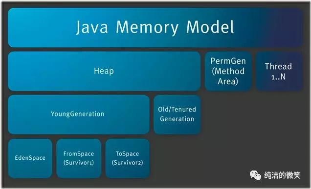
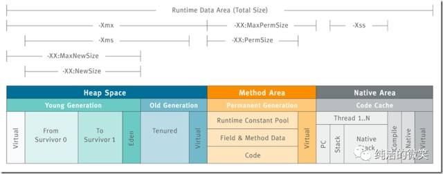
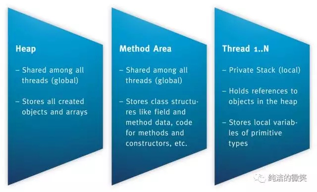
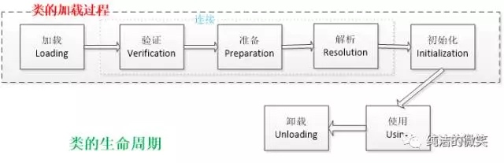
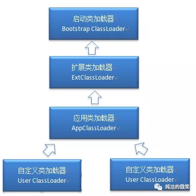
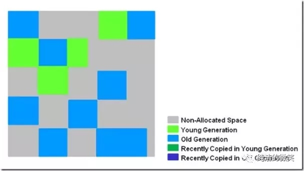
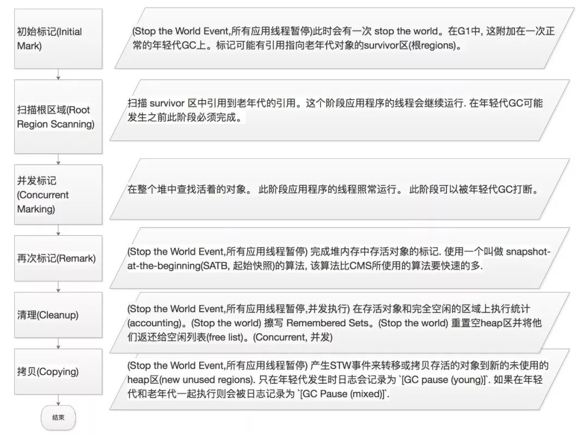
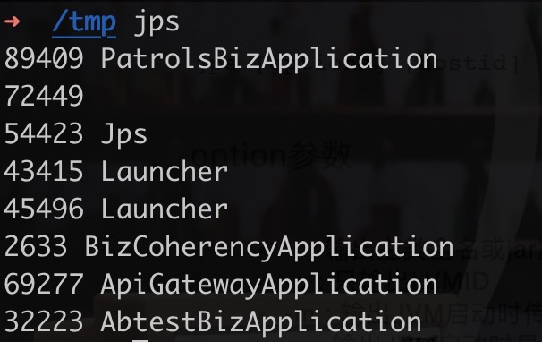

Java Jvm
组成
JVM组成
两个子系统：
- 类加载
- 执行引擎
两个组件：
- 运行时数据区 - JVM内存区域
- 本地方法接口

JVM内存结构 - 运行时数据区 组成
概述
- 堆内存
- 年轻代
- edenSpace
- FromSpace
- ToSpace
- 老年代
- 年轻代
- 方法区
- 线程共享，保存类、常量、静态变量等数据
- 虚拟机栈
- 本地方法栈
- 程序计数器


大小参数控制：
- -Xms设置堆的最小空间大小。
- -Xmx设置堆的最大空间大小。
- -XX:NewSize设置新生代最小空间大小。
- -XX:MaxNewSize设置新生代最大空间大小。
- -XX:PermSize设置永久代最小空间大小。
- -XX:MaxPermSize设置永久代最大空间大小。
- -Xss设置每个线程的堆栈大小。
堆
几乎所有的对象实例都在这里分配内存
方法区
各线程共享
1.6及之前版本
- 类信息、类方法等
- 运行时常量池（包含字符串常量池）
- 静态变量和全局变量等
- 符号引用
1.7版本
- 静态变量和字符串常量池被移到堆中
- 符号引用被移到本地堆中
1.8版本
- 基本上只包含类信息

程序计数器
同汇编中的 PC 寄存器，存储下一条要执行的指令位置，理论上每个线程需要有一个
JVM栈
每个方法被执行的时候都会同时创建一个栈帧（Stack Frame）用于存储局部变量表、操作栈、动态链接、方法出口等信息。
每一个方法被调用直至执行完成的过程，就对应着一个栈帧在虚拟机栈中从入栈到出栈的过程。
局部变量表
- 基本类型的局部变量
- 非基本类型对象的引用指针
关于永久代、方法区、元空间
1.7 版本前：
从HotSpot虚拟机实现上来说，方法区存在于永久代中。从规范上来讲没有永久代这一概念。
永久代的历史原因是：HotSpot虚拟机的实现上，无论老年代、还是方法区内存满了，都会触发方法区和老年代的GC，因此称之为永久代
永久代与堆隔离，但物理内存上连续
1.8 版本：
方法区存在于元空间中，元空间存在于本地内存中
-XX:MetaspaceSize，class metadata的初始空间配额，以bytes为单位，达到该值就会触发垃圾收集进行类型卸载，同时GC会对该值进行调整：如果释放了大量的空间，就适当的降低该值；如果释放了很少的空间，那么在不超过MaxMetaspaceSize（如果设置了的话），适当的提高该值。
-XX：MaxMetaspaceSize，可以为class metadata分配的最大空间。默认是没有限制的。
-XX：MinMetaspaceFreeRatio，在GC之后，最小的Metaspace剩余空间容量的百分比，减少为class metadata分配空间导致的垃圾收集。
-XX:MaxMetaspaceFreeRatio，在GC之后，最大的Metaspace剩余空间容量的百分比，减少为class metadata释放空间导致的垃圾收集。
为什么替代
旧方法中，永久代大小由 -XX:PermSize，-XX:MaxPermSize指定，无法准确知道该设置的合适值。
新方法中，元空间移到了本地内存，可以由系统实际剩余内存控制
类加载机制

加载过程

加载：加载对应的.class文件，并分配内存和对象
通过一个类的全限定名来获取其定义的二进制字节流。
将这个字节流所代表的静态存储结构转化为方法区的运行时数据结构。
在Java堆中生成一个代表这个类的 java.lang.Class对象，作为对方法区中这些数据的访问入口。
验证：验证类格式是否合法
文件格式验证：验证字节流是否符合Class文件格式的规范；例如：是否以 0xCAFEBABE开头、主次版本号是否在当前虚拟机的处理范围之内、常量池中的常量是否有不被支持的类型。
元数据验证：对字节码描述的信息进行语义分析（注意：对比javac编译阶段的语义分析），以保证其描述的信息符合Java语言规范的要求；例如：这个类是否有父类，除了 java.lang.Object之外。
字节码验证：通过数据流和控制流分析，确定程序语义是合法的、符合逻辑的。
符号引用验证：确保解析动作能正确执行。
准备：为类的静态变量分配内存，并将其初始化为默认值
准备阶段是正式为类变量分配内存并设置类变量初始值的阶段，这些内存都将在方法区中分配。对于该阶段有以下几点需要注意：
这时候进行内存分配的仅包括类变量（static），而不包括实例变量，实例变量会在对象实例化时随着对象一块分配在Java堆中。
这里所设置的初始值通常情况下是数据类型默认的零值（如0、0L、null、false等），而不是被在Java代码中被显式地赋予的值
public static int value = 3，准备后其值为 0
public final static int value = 3，准备后其值为 3
解析：把类中的符号引用转换为直接引用
解析阶段是虚拟机将常量池内的符号引用替换为直接引用的过程，解析动作主要针对类或接口、字段、类方法、接口方法、方法类型、方法句柄和调用点限定符7类符号引用进行。符号引用就是一组符号来描述目标，可以是任何字面量。
直接引用就是直接指向目标的指针、相对偏移量或一个间接定位到目标的句柄
初始化：为静态成员变量赋予初始值
初始化，为类的静态变量赋予正确的初始值，JVM负责对类进行初始化，主要对类变量进行初始化。在Java中对类变量进行初始值设定有两种方式：
- 声明类变量是指定初始值
- 使用静态代码块为类变量指定初始值
JVM初始化步骤
- 假如这个类还没有被加载和连接，则程序先加载并连接该类
- 假如该类的直接父类还没有被初始化，则先初始化其直接父类
- 假如类中有初始化语句，则系统依次执行这些初始化语句
类初始化时机：只有当对类的主动使用的时候才会导致类的初始化，类的主动使用包括以下六种：
- 创建类的实例，也就是new的方式
- 访问某个类或接口的静态变量，或者对该静态变量赋值
- 调用类的静态方法
- 反射（如 Class.forName(“com.shengsiyuan.Test”)）
- 初始化某个类的子类，则其父类也会被初始化
- Java虚拟机启动时被标明为启动类的类（ JavaTest），直接使用 java.exe命令来运行某个主类
注意
类的非静态成员变量，只有在创建实例时，才会被初始化到堆中
加载器

启动类加载器： BootstrapClassLoader，加载虚拟机类库，本地方法
扩展类加载器： ExtensionClassLoader，加载系统类库
应用程序类加载器：ApplicationClassLoader，加载用户类的路径
加载机制
全盘负责
当一个类加载器负责加载某个Class时，该Class所依赖的和引用的其他Class也将由该类加载器负责载入，除非显示使用另外一个类加载器来载入
双亲委派
先让父类加载器试图加载该类，只有在父类加载器无法加载该类时才尝试从自己的类路径中加载该类
缓存机制
缓存机制将会保证所有加载过的Class都会被缓存，当程序中需要使用某个Class时，类加载器先从缓存区寻找该Class，只有缓存区不存在，系统才会读取该类对应的二进制数据，并将其转换成Class对象，存入缓存区。这就是为什么修改了Class后，必须重启JVM，程序的修改才会生效
垃圾回收算法
对象存活判断
引用计数：
有循环引用问题
可达性分析
GC Roots：
- 虚拟机栈中引用的对象。
- 本地方法栈中JNI引用的对象。
- 方法区中类静态属性实体引用的对象。
- 方法区中常量引用的对象。
垃圾收集算法
标记 - 清除算法
过程：
- 标记不需要的对象
- 清除
特点：
- 标记效率不高
- 清除后产生大量内存碎片
复制算法
过程：
- 内存分为两块
- 将一块中的存活对象，复制到另一半
特点：
- 没有内存碎片
- 内存利用率不高
- 存活对象多时要复制大量数据，性能慢。适合于新生代，存活对象很少的情况
标记 - 压缩/整理算法
过程：
- 标记
- 向一端移动
分代收集算法
即根据新生代、老年代特性，采用不同的收集算法
垃圾收集器
Serial收集器
最古老版本
特点：
- 单线程回收
- 新生代复制，老年代标记-压缩
- 过程中 STW
使用：-XX:+UseSerialGC
ParNew收集器
Serial收集器并行版本
特点：
- 新生代多线程复制
- 老年代串行标记-压缩
使用：-XX:+UseParNewGC
Parallel
类似于ParNew，更关注系统吞吐量
可以通过参数来打开自适应调节策略，虚拟机会根据当前系统的运行情况收集性能监控信息，动态调整这些参数以提供最合适的停顿时间或最大的吞吐量；也可以通过参数控制GC的时间不大于多少毫秒或者比例；新生代复制算法、老年代标记-压缩
使用：-XX:+UseParallelGC 老年代串行
Parallel Old 收集器
Parallel的老年代版本，老年代并行标记 - 压缩
使用：-XX:+UseParallelOldGC 使用Parallel收集器 + 老年代并行
CMS收集器
Concurrent Mark Sweep：并行标记清除
目标：追求最短停顿时间
过程：
- 触发条件
- 老年代、永久代使用率达到92%
- 新生代没有足够的空间晋升为老年代
- 初始标记
- STW
- 标记GC roots直接关联的老年代对象、标记新生代可达的老年代对象
- 速度快
- 并发标记
- 递归标记上一步骤中，已标记对象的内部可引用对象
- 并发标记过程中发生变化的，记号为dirty
- 时间长，但并发执行
- 并发预清理
- 标记新生代中的新出现对象引用的老年代对象，新晋升的老年代对象
- 扫描上一阶段中的dirty对象，重新处理
- 循环直至达到最大循环次数（默认无），最长时间（默认5秒）
- 目的是尽量减少下一阶段的暂停时间
- 重新标记
- STW
- 修正并发标记期间，因程序运作导致的误差
- 重新扫描新生代
- 重新扫码GC roots可达对象
- 处理标记为dirty的对象
- 时间中等
- 并发清除
- 不会STW
优点：
- 并发收集，低停顿
缺点：
- 标记 - 清除算法会产生大量碎片、并发阶段会降低吞吐量
参数使用：
- -XX:+UseConcMarkSweepGC 使用CMS收集器
- -XX:+ UseCMSCompactAtFullCollection Full GC后，进行一次碎片整理；整理过程是独占的，会引起停顿时间变长
- -XX:+CMSFullGCsBeforeCompaction 设置进行几次Full GC后，进行一次碎片整理
- -XX:ParallelCMSThreads 设定CMS的线程数量（一般情况约等于可用CPU数量）
G1收集器
特点：
- 标记 - 压缩，不会产生碎片
- 将内存划分为若干区域，新生代、老年代等是各个区域的组合
- 每个区块一个rememberd set，记录进入的指针
- 预测各区块的回收时间，回收部分区块，从而达到可预测时间的目的


GC调优工具
自带图形工具
- jconsole
- jvisualvm
命令行工具
jps：打印java process status

jstat：
- JVM statistics Monitoring
- 用于监视虚拟机运行时状态信息的命令，它可以显示出虚拟机进程中的类装载、内存、垃圾收集、JIT编译等运行数据
- jmap：生成堆快照
- jhat：分析堆快照
- jstack：生成线程快照
- jinfo：查看虚拟机参数
GC优化
- -Xms -Xmx调整初始堆大小和最大堆大小适配机器内存大小